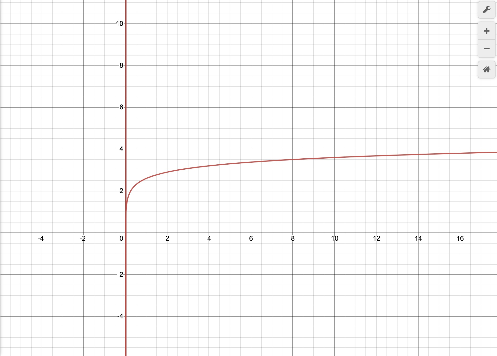
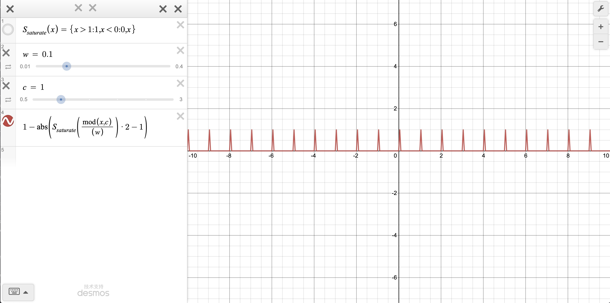

二维细分网格
分享一种可以扩展的细分二维网格的实现，主要参考：Borderland between Rendering and Editor - Part 1
Shader 代码
顶点着色器
// #version 460 core layout(std140, binding = 0) uniform PerFrameData { mat4 view; mat4 proj; vec4 cameraPos; }; struct Vertex { float p[3]; float n[3]; float tc[2]; }; layout(std430, binding = 1) restrict readonly buffer Vertices { Vertex in_Vertices[]; }; layout(std430, binding = 2) restrict readonly buffer Matrices { mat4 in_ModelMatrices[]; }; // extents of grid in world coordinates float gridSize = 100.0; const vec3 pos[4] = vec3[4]( vec3(-1.0, 0.0, -1.0), vec3( 1.0, 0.0, -1.0), vec3( 1.0, 0.0, 1.0), vec3(-1.0, 0.0, 1.0) ); const int indices[6] = int[6]( 0, 1, 2, 2, 3, 0 ); layout (location=0) out vec2 uv; void main() { mat4 MVP = proj * view; int idx = indices[gl_VertexID]; vec3 position = pos[idx] * gridSize; gl_Position = MVP * vec4(position, 1.0); uv = position.xz; }片元着色器
#version 460 core // extents of grid in world coordinates float gridSize = 100.0; // size of one cell float gridCellSize = 0.025; // color of thin lines vec4 gridColorThin = vec4(0.5, 0.5, 0.5, 1.0); // color of thick lines (every tenth line) vec4 gridColorThick = vec4(0.0, 0.0, 0.0, 1.0); // minimum number of pixels between cell lines before LOD switch should occur. const float gridMinPixelsBetweenCells = 2.0; float log10(float x) { return log(x) / log(10.0); } float satf(float x) { return clamp(x, 0.0, 1.0); } vec2 satv(vec2 x) { return clamp(x, vec2(0.0), vec2(1.0)); } float max2(vec2 v) { return max(v.x, v.y); } vec4 gridColor(vec2 uv) { vec2 dudv = vec2( length(vec2(dFdx(uv.x), dFdy(uv.x))), length(vec2(dFdx(uv.y), dFdy(uv.y))) ); float lodLevel = max(0.0, log10((length(dudv) * gridMinPixelsBetweenCells) / gridCellSize) + 1.0); float lodFade = fract(lodLevel); // cell sizes for lod0, lod1 and lod2 float lod0 = gridCellSize * pow(10.0, floor(lodLevel)); float lod1 = lod0 * 10.0; float lod2 = lod1 * 10.0; // each anti-aliased line covers up to 4 pixels dudv *= 4.0; // calculate absolute distances to cell line centers for each lod and pick max X/Y to get coverage alpha value float lod0a = max2( vec2(1.0) - abs(satv(mod(uv, lod0) / dudv) * 2.0 - vec2(1.0)) ); float lod1a = max2( vec2(1.0) - abs(satv(mod(uv, lod1) / dudv) * 2.0 - vec2(1.0)) ); float lod2a = max2( vec2(1.0) - abs(satv(mod(uv, lod2) / dudv) * 2.0 - vec2(1.0)) ); // blend between falloff colors to handle LOD transition vec4 c = lod2a > 0.0 ? gridColorThick : lod1a > 0.0 ? mix(gridColorThick, gridColorThin, lodFade) : gridColorThin; // calculate opacity falloff based on distance to grid extents float opacityFalloff = (1.0 - satf(length(uv) / gridSize)); // blend between LOD level alphas and scale with opacity falloff c.a *= (lod2a > 0.0 ? lod2a : lod1a > 0.0 ? lod1a : (lod0a * (1.0-lodFade))) * opacityFalloff; return c; } layout (location=0) in vec2 uv; layout (location=0) out vec4 out_FragColor; void main() { out_FragColor = gridColor(uv); };上述是完整的代码，主要效果类似于 Desmos - Calculator 中的网格线，下面会详细分析一下算法中的各个部分。
算法分析
vec4 gridColor(vec2 uv) // (1)
{
vec2 dudv = vec2(
length(vec2(dFdx(uv.x), dFdy(uv.x))),
length(vec2(dFdx(uv.y), dFdy(uv.y)))
); // (2)
// (3)
float lodLevel = max(0.0, log10((length(dudv) * gridMinPixelsBetweenCells) / gridCellSize) + 1.0);
float lodFade = fract(lodLevel);
// (4)
// cell sizes for lod0, lod1 and lod2
float lod0 = gridCellSize * pow(10.0, floor(lodLevel));
float lod1 = lod0 * 10.0;
float lod2 = lod1 * 10.0;
// each anti-aliased line covers up to 4 pixels
dudv *= 4.0;
// (5)
// calculate absolute distances to cell line centers for each lod and pick max X/Y to get coverage alpha value
float lod0a = max2( vec2(1.0) - abs(satv(mod(uv, lod0) / dudv) * 2.0 - vec2(1.0)) );
float lod1a = max2( vec2(1.0) - abs(satv(mod(uv, lod1) / dudv) * 2.0 - vec2(1.0)) );
float lod2a = max2( vec2(1.0) - abs(satv(mod(uv, lod2) / dudv) * 2.0 - vec2(1.0)) );
// (6)
// blend between falloff colors to handle LOD transition
vec4 c = lod2a > 0.0 ? gridColorThick : lod1a > 0.0 ? mix(gridColorThick, gridColorThin, lodFade) : gridColorThin;
// (7)
// calculate opacity falloff based on distance to grid extents
float opacityFalloff = (1.0 - satf(length(uv) / gridSize));
// blend between LOD level alphas and scale with opacity falloff
c.a *= (lod2a > 0.0 ? lod2a : lod1a > 0.0 ? lod1a : (lod0a * (1.0-lodFade))) * opacityFalloff;
return c;
}
gridColor 是最主要的部分，下面主要分析该函数的步骤：
- 注意，这里的 uv 已经乘以了 gridSize，范围是 $[-100, 100]$；
- 计算一个像素间隔下，uv 的变化是多少，主要是作为计算 LOD 层次的依据；
- 计算 LOD 层次，当
(length(dudv) * gridMinPixelsBetweenCells为一倍的gridCellSize时，lodLevel为 0；当为十倍时，lodLevel为 1；当为百倍时，lodLevel为 2；当为千倍时，lodLevel为 3；整体关系是一种对数关系，参看以下函数图像： - 根据目前的 LOD 层次，选择合适的网格尺寸；
- 网格绘制的一种方法 $1-abs(S_{saturate}(\frac{mod(x, cellSize)}{lineSize})·2-1)$，参见图像：
- 混合三级层次的颜色；
- 计算一个随着离网格中心越远，透明度越高的参数，用来进行整体的混合；